Avanzado · Capítulo 10
Señales y comunicación entre procesos
Conecta el motor a entradas, callbacks o procesos externos conservando identidades y garantías de aceptación.
Una respuesta que llega desde otro proceso

Este recorrido usa un adaptador del host: espera la reserva, envía la solicitud externa y entrega la respuesta mediante signal. El transporte lo implementa tu aplicación.
Distingue tres fronteras
| Necesidad | Mecanismo | Dónde vive |
|---|---|---|
| Mover datos entre nodos del mismo workflow | Bindings y outputs confirmados. | En el engine; ver datos. |
| Compartir el motor entre tareas del mismo programa | Clones de WorkflowApplication y planes de esa instancia. | En el host Rust; no hace falta red. |
| Entregar trabajo desde otro proceso | HTTP, un consumidor de cola u otro adaptador explícito. | En tu host Rust, mediante su propio transporte. |
Un PreparedWorkflow, un Arc y un future son objetos del proceso. No se envían por red. Entre procesos mueve JSON validado, revisiones de workflow, RunIds y bytes/referencias con un contrato de almacenamiento conocido.
Un adaptador de entrada para una cola
Tu consumidor recibe un mensaje, autentica su origen y elige un plan preparado. El ID de entrega puede servir como clave de recepción si identifica una solicitud estable. El broker y su SDK los aporta el host.
async fn aceptar_mensaje(
app: &WorkflowApplication,
access: AccessContext,
plan: PreparedWorkflow,
id_mensaje: String,
input: serde_json::Value,
) -> Result<StartReceipt, ForgeError> {
let mut request = StartRunRequest::new(plan, input);
request.options.require_durable = true;
request.options.receipt_key = Some(id_mensaje);
app.start(access, request).await
}- Confirma el mensaje de origen después de obtener un recibo con la garantía durable requerida.
- Si se pierde la respuesta, reenvía la misma clave y el mismo contenido/opciones dentro de su ventana de deduplicación.
- Guarda RunId para consultas posteriores. La aceptación no significa que el workflow ya terminó.
- Para encadenar dos sistemas con publicación y confirmación atómicas, diseña la frontera outbox/inbox o transaccional que requiera tu integración. El engine no entrega una transacción distribuida con tu broker.
Para un cron o handler que espera su propio resultado, prefiere execute. Usa start cuando necesites un recibo y seguimiento explícito. No conviertas el consumidor de la cola en una operación infinita dentro de un workflow.
Esperar una respuesta externa
{
"id": "aprobar",
"kind": "await_signal",
"input": {
"select": {
"source": "input",
"pointer": ""
}
},
"correlation": {
"select": {
"source": "input",
"pointer": "/pedido"
}
},
"timeout_ms": 60000,
"payload_schema": {
"type": "object",
"required": [
"aprobado"
],
"properties": {
"aprobado": {
"type": "boolean"
}
},
"additionalProperties": false
}
}La reserva genera un WaitId. Para el input {"pedido":"P-42"}, la correlación será "P-42". El host entrega después:
let receipt = app.signal(access.clone(), SignalCommand {
run_id,
wait_id,
message_id: "aprobacion-P-42".into(),
correlation: "P-42".into(),
payload: serde_json::json!({"aprobado": true}),
artifacts: vec![],
}).await?;{"start":null,"signal":{"aprobado":true}}La demostración completa espera de forma acotada a que exista la reserva y luego envía la señal desde el mismo host para mostrar la API:
cargo run --manifest-path manual/ejemplos/Cargo.toml --locked --bin senalesReservar antes de iniciar el trabajo externo
Si una API puede responder de inmediato, evita iniciar el trabajo en un nodo y crear la espera después: el callback podría llegar antes de la reserva. await_signal.start permite confirmar la reserva antes de despachar la operación de inicio.
{
"operation": {"id":"mi.integracion.iniciar", "contract":"1", "implementation":"r1"},
"config": {},
"input": {
"object": {
"pedido": {"select":{"source":"input","pointer":"/input/pedido"}},
"espera": {"select":{"source":"input","pointer":"/wait"}}
}
}
}El input disponible para ese binding es {"input":<input_del_control>,"wait":{"id","correlation","deadline_at_ms"}}. Tu operación construye la petición del destino usando esa identidad; el host define URL y autenticación del callback.
Una señal puede aceptarse mientras termina start, pero no se consume hasta confirmar su resultado. El callback no resuelve por sí solo un efecto de inicio Unknown.
Duplicados, expiración y recuperación
- WaitId identifica la reserva dentro del run; conocer una correlación no concede permiso para entregar una señal.
- Repetir la misma entrega devuelve su acuse. Cambiar payload, actor o identidad, o enviar otro mensaje a una reserva ocupada, produce conflicto.
- Una reserva inexistente produce wait.not_found; no existe un inbox anticipado que invente la espera.
- El timeout cuenta desde reservar. No amplía el deadline global del run; para esperas largas configura también run_timeout_ms.
- Con SQLite, reservas, entrega y consumo se conservan bajo transiciones durables. Waiting libera capacidad activa cuando el recorrido queda suspendido.
- Un proceso que reinicia el mismo store lo hace después de terminar el dueño anterior. Debe elegir RecoveryPolicy::Resume explícitamente; el deadline original se conserva. Eso es recuperación secuencial, no ejecución distribuida concurrente.